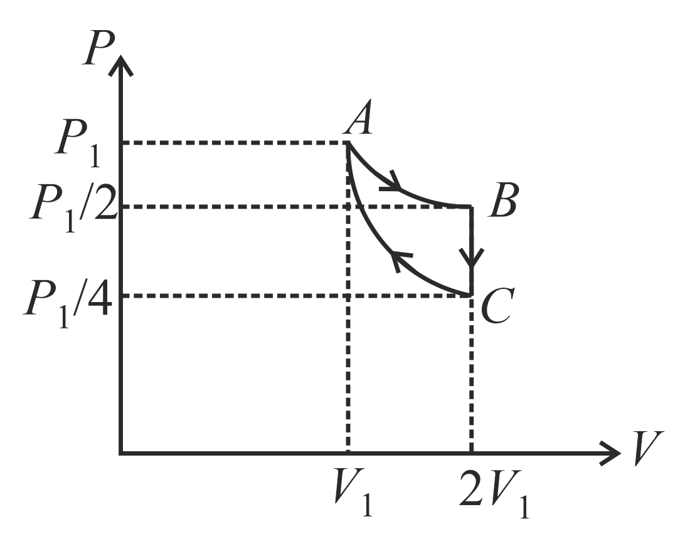
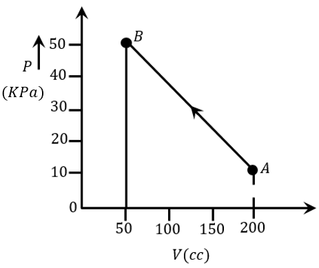
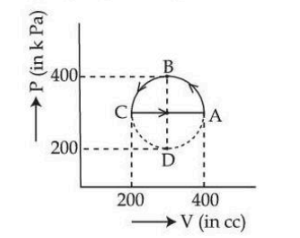

Filter questions
Q1
PHY-2021-0101-S2-Q028
2021 | 01 Sep | Shift 2
—
Integer
The temperature of 3.00 mol of an ideal diatomic gas is increased by 40.0°C without changing the pressure of the gas. The molecules in the gas rotate but do not oscillate. If the ratio of change in internal energy of the x gas to the amount of workdone by the gas is 10. Then the value of x (round off to the nearest integer) is _________. ( GivenR= 8.31 J mol-1 K-1

Answer: 25
Q2
PHY-2021-0101-S2-Q026
2021 | 16 Mar | Shift 2
—
Integer
For an ideal heat engine, the temperature of the source is 127°C. In order to have 60% efficiency the temperature of the sink should be __________ ∘C. (Round off to the nearest integer)
Answer: -113
Q3
PHY-2021-0101-S2-Q008
2021 | 18 Mar | Shift 2
—
MCQ
For an adiabatic expansion of an ideal gas, the fractional change in its pressure is equal to (where γ is the ratio of specific heats):
Answer: A
Q4
PHY-2021-0101-S2-Q009
2021 | 18 Mar | Shift 2
—
MCQ
An ideal gas in a cylinder is separated by a piston in such a way that the entropy of one part is S1 and that of the other part is S2. Given that S1 > S2. If the piston is removed then the total entropy of the system will be:
Answer: D
Q5
PHY-2021-0101-S1-Q008
2021 | 20 Jul | Shift 1
—
MCQ
The entropy of any system is given by, S = α2β ln[ μ Jβ2 kR + 3] where α and β are the constants. μ, J, k and R are number of moles, mechanical equivalent of heat, Boltzmann's constant and gas constant, respectively. [Take S = dQ ] T Choose the incorrect option from the following:
Answer: D
Q6
PHY-2021-0101-S1-Q009
2021 | 24 Feb | Shift 1
—
MCQ
Match List I with List II. List I List II
Answer: A
Q7
PHY-2021-0101-S2-Q005
2021 | 24 Feb | Shift 2
—
MCQ
If one mole of an ideal gas at is allowed to expand reversibly and isothermally ( to ) its pressure is (P1, V1) A B reduced to one-half of the original pressure (see figure). This is followed by a constant volume cooling till its pressure is reduced to one-fourth of the initial value (B →C). Then it is restored to its initial state by a reversible adiabatic compression ( to ). The net workdone by the gas is equal to: C A

Answer: D
Q8
PHY-2021-0101-S2-Q024
2021 | 25 Feb | Shift 2
—
Integer
A reversible heat engine converts one-fourth of the heat input into work. When the temperature of the sink is reduced by its efficiency is doubled. The temperature in Kelvin of the source will be ___. 52 K,

Answer: 208
Q9
PHY-2021-0101-S2-Q008
2021 | 25 Jul | Shift 2
—
MCQ
A heat engine has an efficiency of 1. When the temperature of sink is reduced by 62°C, its efficiency get 6 doubled. The temperature of the source is:
Answer: D
Q10
PHY-2021-0101-S2-Q009
2021 | 25 Jul | Shift 2
—
MCQ
Two spherical soap bubbles of radii r1 and r2 in vacuum combine under isothermal conditions. The resulting bubble has a radius equal to:
Answer: C
Q11
PHY-2021-0101-S1-Q006
2021 | 26 Aug | Shift 1
—
MCQ
An electric appliance supplies 6000 J min−1, heat to the system. If the system delivers a power of 90 W. How long it would take to increase the internal energy by 103? 2. 5 × J
Answer: B
Q12
PHY-2021-0101-S2-Q009
2021 | 26 Feb | Shift 2
—
MCQ
The internal energy (U), pressure (P) and volume (V ) of an ideal gas are related as U = 3PV + 4. The gas is
Answer: B
Q13
PHY-2021-0101-S2-Q023
2021 | 27 Aug | Shift 2
—
Integer
A heat engine operates between a cold reservoir at temperature T2 = 400 K and a hot reservoir at temperature T1. It takes 300 J of heat from the hot reservoir and delivers 240 J of heat to the cold reservoir in a cycle. The minimum temperature of the hot reservoir has to be
Answer: 500
Q14
PHY-2021-0101-S2-Q010
2021 | 27 Jul | Shift 2
—
MCQ
Two Carnot engines A and B operate in series such that engine A absorbs heat at T1 and rejects heat to a sink at temperature T. Engine B absorbs half of the heat rejected by Engine A and rejects heat to the sink at T3. When workdone in both the cases is equal, to value of T is:
Answer: D
Q15
PHY-2021-0101-S1-Q008
2021 | 31 Aug | Shift 1
—
MCQ
A reversible engine has an efficiency of 4. If the temperature of the sink is reduced by 58°C, its efficiency becomes double. Calculate the temperature of the sink:
Answer: C
Q16
PHY-2021-0101-S2-Q022
2021 | 31 Aug | Shift 2
—
Integer
A sample of gas with γ= 1.5 is taken through an adiabatic process in which the volume is compressed from 1200 cm3 to 300 cm3. If the initial pressure is 200 kPa. The absolute value of the workdone by the gas in the process = ________ J.

Answer: 480
Q17
PHY-2022-0101-S1-Q009
2022 | 24 Jun | Shift 1
—
MCQ
A Carnot engine whose heat sinks at 27°C, has an efficiency of 25%. By how many degrees should the temperature of the source be changed to increase the efficiency by 100% of the original efficiency?
Answer: B
Q18
PHY-2022-0101-S2-Q018
2022 | 24 Jun | Shift 2
—
MCQ
An electric bulb is rated as 200 W. What will be the peak magnetic field at 4 m distance produced by the radiations coming from this bulb? Consider this bulb as a point source with 3. 5% efficiency.
Answer: B
Q19
PHY-2022-0101-S1-Q020
2022 | 25 Jun | Shift 1
—
MCQ
A signal of 100THz frequency can be transmitted with maximum efficiency by
Answer: B
Q20
PHY-2022-0101-S1-Q007
2022 | 26 Jun | Shift 1
—
MCQ
The efficiency of a Carnot's engine, working between steam point and ice point, will be
Answer: A
Q21
PHY-2022-0101-S2-Q025
2022 | 26 Jun | Shift 2
—
Integer
A heat engine operates with the cold reservoir at temperature 324 K. The minimum temperature of the hot reservoir, if the heat engine takes 300 J heat from the hot reservoir and delivers 180 J heat to the cold reservoir per cycle, is _____ K.
Answer: 540
Q22
PHY-2022-0101-S1-Q023
2022 | 27 Jun | Shift 1
—
Integer
In a carnot engine, the temperature of reservoir is 527°C and that of sink is 200 K. If the workdone by the engine when it transfers heat from reservoir to sink is 12000 kJ, the quantity of heat absorbed by the engine from reservoir is _____ ×106 J.
Answer: 16
Q23
PHY-2022-0101-S1-Q025
2022 | 28 Jun | Shift 1
—
Integer
The total internal energy of two mole monoatomic ideal gas at temperature will be _____. (Given T = 300 K J R = 8. 31 J mol−1 ⋅K )

Answer: 7479
Q24
PHY-2022-0101-S1-Q022
2022 | 29 Jun | Shift 1
—
Integer
of heat is given to a heat engine, and it rejects of heat. If source temperature is 300 calories 225 calories 227°C, then the temperature of sink will be _____ ∘C.
Answer: 102
Q25
PHY-2022-0101-S2-Q008
2022 | 29 Jun | Shift 2
—
MCQ
Starting with the same initial conditions, an ideal gas expands from volume to in three different ways. V1 V2 The work done by the gas is W1 if the process is purely isothermal, W2, if the process is purely adiabatic and W3 if the process is purely isobaric. Then, choose the correct option
Answer: A
Q26
PHY-2023-0101-S1-Q009
2023 | 06 Apr | Shift 1
—
MCQ
A source supplies heat to a system at the rate of 1000 W. If the system performs work at a rate of 200 W. The rate at which internal energy of the system increases is
Answer: B
Q27
PHY-2023-0101-S1-Q008
2023 | 10 Apr | Shift 1
—
MCQ
Consider two containers A and B containing monoatomic gases at the same Pressure P, Volume V and 1 Temperature T. The gas in A is compressed isothermally to 8 of its original volume while the gas in B is compressed adiabatically to 1 of its original volume. The ratio of final pressure of gas in B to that of gas in A is 8
Answer: B
Q28
PHY-2023-0101-S2-Q007
2023 | 10 Apr | Shift 2
—
MCQ
A gas is compressed adiabatically, which one of the following statement is NOT true?
Answer: B
Q29
PHY-2023-0101-S2-Q008
2023 | 10 Apr | Shift 2
—
MCQ
A gas mixture consists of 2 moles of oxygen and 4 moles of neon at temperature T. Neglecting all vibrational modes, the total internal energy of the system will be:
Answer: A
Q30
PHY-2023-0101-S2-Q011
2023 | 11 Apr | Shift 2
—
MCQ
The thermodynamic process, in which internal energy of the system remains constant is
Answer: A
Q31
PHY-2023-0101-S1-Q012
2023 | 12 Apr | Shift 1
—
MCQ
An engine operating between the boiling and freezing points of water will have A. Efficiency more than 27%. B. Efficiency less than the efficiency of a Carnot engine operating between the same two temperatures. C. Efficiency equal to 27%. D. Efficiency less than 27%. Choose the correct answer from the options given below
Answer: B
Q32
PHY-2023-0101-S1-Q009
2023 | 13 Apr | Shift 1
—
MCQ
Under isothermal condition, the pressure of a gas is given by P = aV –3, where a is a constant and V is the volume of the gas. The bulk modulus at constant temperature is equal to
Answer: C
Q33
PHY-2023-0101-S2-Q020
2023 | 13 Apr | Shift 2
—
MCQ
To radiate EM signal of wavelength λ with high efficiency, the antennas should have a minimum size equal to:
Answer: C
Q34
PHY-2023-0101-S2-Q012
2023 | 24 Jan | Shift 2
—
MCQ
In an Isothermal change, the change in pressure and volume of a gas can be represented for three different temperature; T3 > T2 > T1 as:

Answer: A
Q35
PHY-2023-0101-S1-Q012
2023 | 25 Jan | Shift 1
—
MCQ
A Carnot engine with efficiency 50% takes heat from a source at 600 K. In order to increase the efficiency to 70%, keeping the temperature of sink same, the new temperature of the source will be:
Answer: C
Q36
PHY-2023-0101-S2-Q011
2023 | 25 Jan | Shift 2
—
MCQ
According to law of equipartition of energy the molar specific heat of a diatomic gas at constant volume where the molecule has one additional vibrational mode is:-
Answer: A
Q37
PHY-2023-0101-S2-Q013
2023 | 25 Jan | Shift 2
—
MCQ
Match List I with List II: List I List II AIsothermal I Work done by the gas decreases internal energy Process B Adiabatic Process II No change in internal energy The heat absorbed goes partly to increase internal energy and partly to do C Isochoric Process III work DIsobaric Process IVNo work is done on or by the gas Choose the correct answer from the options given below:
Answer: B
Q38
PHY-2023-0101-S1-Q009
2023 | 30 Jan | Shift 1
—
MCQ
Heat is given to an ideal gas in an isothermal process. A. Internal energy of the gas will decrease. B. Internal energy of the gas will increase. C. Internal energy of the gas will not change. D. The gas will do positive work. E. The gas will do negative work. Choose the correct answer from the options given below:
Answer: D
Q39
PHY-2023-0101-S2-Q011
2023 | 30 Jan | Shift 2
—
MCQ
Given below are two statements: one is labelled as Assertion A and the other is labelled as Reason R. Assertion A: Efficiency of a reversible heat engine will be highest at temperature of cold reservoir. –273 °C Reason R: The efficiency of Carnot’s engine depends not only on temperature of cold reservoir but it depends on the temperature of hot reservoir too and is given as η = (1 −T2 ) T1 In the light of the above statements, choose the correct answer from the options given below:
Answer: A
Q40
PHY-2023-0101-S1-Q008
2023 | 31 Jan | Shift 1
—
MCQ
The pressure of a gas changes linearly with volume from A to B as shown in figure. If no heat is supplied to or extracted from the gas then change in the internal energy of the gas will be

Answer: D
Q41
PHY-2023-0101-S2-Q010
2023 | 31 Jan | Shift 2
—
MCQ
A water heater of power 2000 W is used to heat water. The specific heat capacity of water is 4200 J. The efficiency of heater is 70%. Time required to heat 2 kg of water from 10°C to 60°C is _____ s. (Assume that the specific heat capacity of water remains constant over the temperature range of the water).
Answer: A
Q42
PHY-2023-0101-S2-Q011
2023 | 31 Jan | Shift 2
—
MCQ
Heat energy of 735 J is given to a diatomic gas allowing the gas to expand at constant pressure. Each gas molecule rotates around an internal axis but do not oscillate. The increase in the internal energy of the gas will be:
Answer: D
Q43
PHY-2023-0101-S2-Q012
2023 | 31 Jan | Shift 2
—
MCQ
A hypothetical gas expands adiabatically such that its volume changes from 08 litres to 27 litres. If the ratio of final pressure of the gas to initial pressure of the gas is 16. Then the ratio of Cp will be. 81 Cv
Answer: B
Q44
PHY-2024-0101-S1-Q010
2024 | 01 Feb | Shift 1
—
MCQ
Two moles of a monoatomic gas is mixed with six moles of a diatomic gas. The molar specific heat of the mixture at constant volume is:
Answer: A
Q45
PHY-2024-0101-S2-Q015
2024 | 01 Feb | Shift 2
—
MCQ
A transformer has an efficiency of 80% and works at 10 V and 4 kW. If the secondary voltage is 240 V, then the current in the secondary coil is:
Answer: B
Q46
PHY-2024-0101-S1-Q009
2024 | 08 Apr | Shift 1
—
MCQ
Two different adiabatic paths for the same gas intersect two isothermal curves as shown in P-V diagram. The relation between the ratio Va and the ratio Vb is: Va ≠Vb Vd Vc Va Vb

Answer: B
Q47
PHY-2024-0101-S1-Q009
2024 | 09 Apr | Shift 1
—
MCQ
The volume of an ideal gas (γ = 1.5) is changed adiabatically from 5 litres to 4 litres. The ratio of initial pressure to final pressure is:
Answer: C
Q48
PHY-2024-0101-S1-Q008
2024 | 27 Jan | Shift 1
—
MCQ
0. 08 kg air is heated at constant volume through 5°C. The specific heat of air at constant volume is 0. 17 kcal kg−1 °C−1 and 1 J = 4. 18 joule cal−1. The change in its internal energy is approximately.
Answer: C
Q49
PHY-2024-0101-S2-Q009
2024 | 30 Jan | Shift 2
—
MCQ
If three moles of monoatomic gas 5 is mixed with two moles of a diatomic gas 7 5, the value of adiabatic γ= 3 γ= exponent γ for the mixture is:
Answer: C
Q50
PHY-2024-0101-S2-Q008
2024 | 31 Jan | Shift 2
—
MCQ
A gas mixture consists of 8 moles of argon and 6 moles of oxygen at temperature T. Neglecting all vibrational modes, the total internal energy of the system is
Answer: C
Q51
PHY-2025-0101-S2-Q029
2025 | 29 Jan | Shift 2
—
Integer
Given below are two statements. One is labelled as Assertion (A) and the other is labelled as Reason (R). Assertion (A): With the increase in the pressure of an ideal gas, the volume falls off more rapidly in an isothermal process in comparison to the adiabatic process. Reason (R): In isothermal process, PV = constant, while in adiabatic process PVγ = constant. Here γ is the ratio of specific heats, P is the pressure and V is the volume of the ideal gas. In the light of the above statements, choose the correct answer from the options given below: (1) Both (A) and (R) are true and (R) is the correct (2) Both (A) and (R) are true but (R) is NOT the explanation of (A) correct explanation of (A) (3) (A) is true but (R) is false (4) (A) is false but (R) is true

Answer: 1